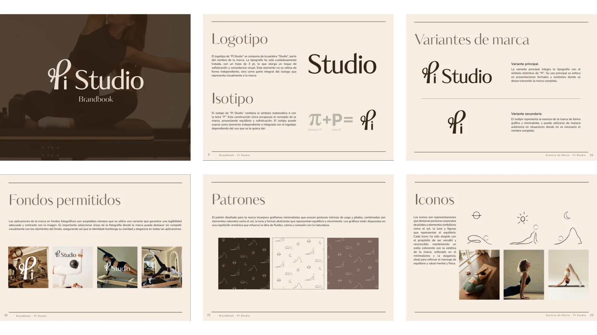

Brandboard – Pi Studio
Este brandbook fue desarrollado para Pi Studio como parte de un proyecto de vinculación universitaria. Reúne todas las directrices y recursos necesarios para garantizar una aplicación coherente y efectiva de la marca en todos sus ámbitos.

Ver completo